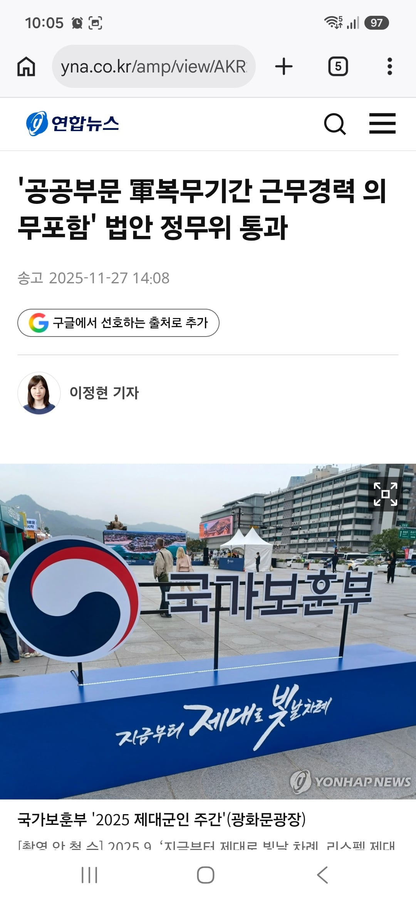
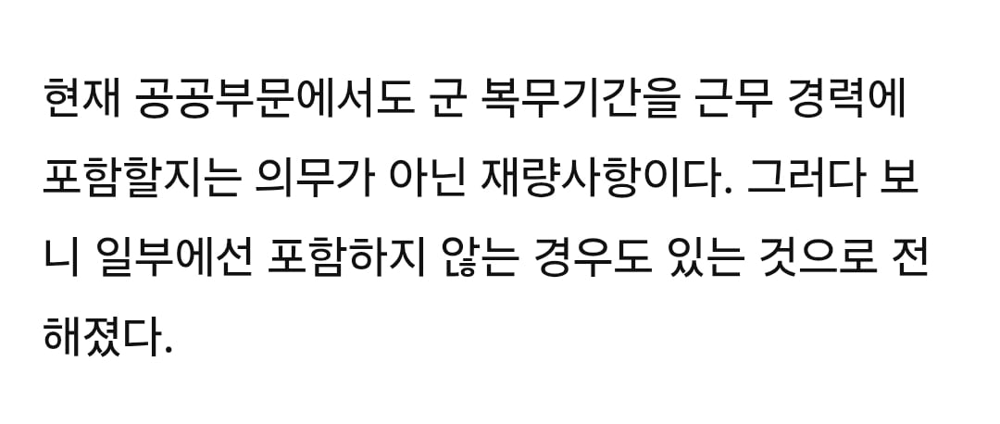

군복무 경력 합산이 재량 이지랄
시발년들


군복무 경력 합산이 재량 이지랄
시발년들
소급적용 해주세요~
군대에 가라 쌍년들아
공무원은 다 호봉 쳐주는데 승진 기간에도 반영해주겠단 얘긴가?
실경력으로 인정해주겠다? 요건가
재량이라서 호봉안쳐주는곳도 있던거 무조건 넣게한다 이거같은데
승진이랑 상관없는거 아님?
진짜 걍 돈 안주기밖에 없는거 아닌가
좆같은 새기들 호봉획정 3호봉만 해주는데도 졸라많은데 남자 경력직들 다 손해봄
솔직히 군대 경험 은근히 도움 많이 되긴 함 ㅋㅋㅋ 할건 해야지 라는 마인드를 가지는 것부터 상명하복, 근무보고 등등 뺑이치면서 얻는 감각들이 회사 업무에 맞닿아 있는 부분이 많음
"저는 군생활을 성실히 이행했고 분대장도 경험해보았으며..." 자소서에 적혀있으면 믿거하는 문장이래
자기 자신에 대한 PR을 해야하는데 한국 남자면 대부분 가는 정보를 서두에 적으니까 걸러도 뭐 ... ㅋㅋㅋ
분대장만 수십만명될듯 ㅋㅋ과장덧붙여서 ㅋㅋㅋㅋ 나도 분대장이었음 ㅅㅂ
지루하고 현학적임
걍 군대는 기본으로 깔고가는거지...
요즘 공군갔다온애들은 그런거 많이 결여되어있어서 놀람
1년 전 뉴스니까 지금은 잘 적용하고 있겠지?
승진기간에도 넣어줘라
어어 나는 승진하기싫다
공무원특
저렇게 2호봉 알뜰살뜰 챙겨줘봤자 2계급만 진급하면 호봉 다 깎아먹음
코레일같은곳 근속 몇년차면 수당주고 연차도 늘어나는데 일반 병출신은 군경력 쳐주는데
간부는 안쳐줘서 미필이랑 같은 취급받음
진짜 황당하네
뺏었다가 줬다가 아주 지들 ㅈ대로여.
결국 뭐 예전이랑 잘쳐줘야 같아졌지 나아진건 없네?